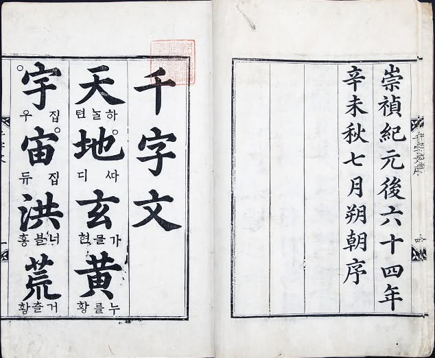
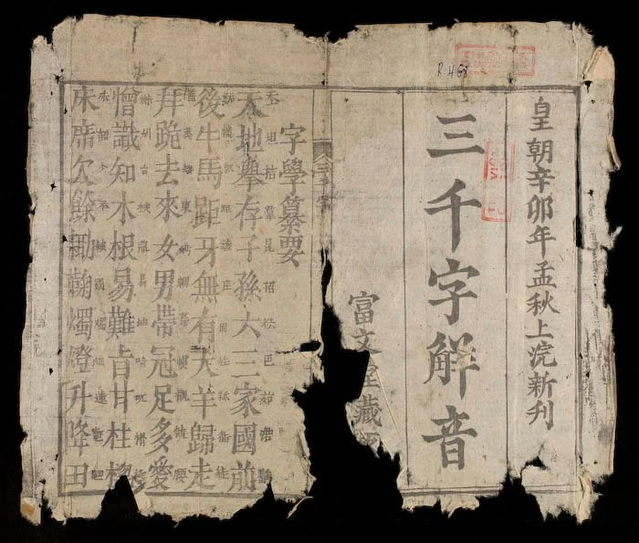
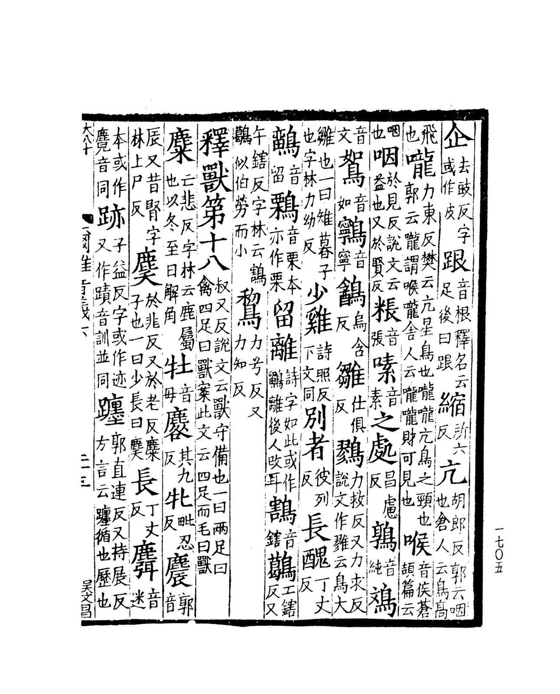

Sinosphere · · revised · Facebook post
Two Labels for Every Character: 물 수 (水)
- Korean Hanja textbooks give each character two labels, as in 물 수 for 水, "water" plus su.
- Vietnam built a mirror-image primer, pairing the Sino-Vietnamese sound with a native word written in Chữ Nôm.
- The same problem, learning Chinese characters without speaking Chinese, produced four different solutions.

Contents
Two labels for one character
Korean Hanja textbooks give each character two labels.
水 = 물 수
물 (mul) tells you what it means: "water."
수 (su) tells you its Sino-Korean reading.
This pairing is called 훈음 (訓音) hun-eum, literally "gloss and sound."
山 = 메 산 (me san)
水 = 물 수 (mul su)
人 = 사람 인 (saram in)
木 = 나무 목 (namu mok)
메 me is an old word for "mountain" that modern Korean has otherwise given up in favour of 산 itself. It survives mainly in this label and in compounds such as 멧돼지 metdwaeji, "mountain pig," the wild boar.
A system five centuries old
The system is old.
Korean children learned characters from the Thousand Character Classic (千字文), a 6th-century Chinese primer. Once the Korean alphabet existed, from 1446, a primer could spell out both the gloss and the sound of every single character.
The 1527 訓蒙字會 Hunmong Jahoe did this systematically for 3,360 characters, teaching each one with its Korean meaning and its Sino-Korean pronunciation. The oldest surviving glossed Thousand Character Classic was printed in Gwangju in 1575, and the most famous one, written out by the calligrapher Han Seok-bong, in 1583.
The format has barely changed since. The page at the top of this article comes from a later Korean edition of the Thousand Character Classic: beside each large character sit two small hangul labels, the native word and the Sino-Korean syllable, exactly like a modern textbook.
But Korea was not alone.
Across the Sinosphere, people faced the same problem: how do you learn Chinese characters when the language you actually speak is not Chinese?
Vietnam: the mirror image

Vietnam developed something strikingly similar.
The old primer 三千字解音 Tam thiên tự giải âm taught Chinese characters together with their Sino-Vietnamese reading and a native Vietnamese gloss, written in Chữ Nôm.
天 𡗶
thiên trời
地 坦
địa đất
So Korean 물 수 and Vietnamese thiên trời are almost mirror images.
Korean puts the native meaning first, then the Sino-Korean sound.
Vietnamese put the Sino-Vietnamese sound first, then the native Vietnamese meaning.
Japan: the gloss became a reading
Japan had related traditions too.
In a reading practice later called 文選読み monzen-yomi, a Chinese word could be read first with its Sino-Japanese pronunciation and then immediately explained with a native Japanese word.
豺狼
sairō no ōkami
First the Chinese-derived reading, then "wolf" in Japanese.
But Japan eventually took the idea much further.
The native Japanese word became an actual reading of the character itself. 山 is not merely explained as yama. You can write 山 in an ordinary Japanese sentence and simply read it yama.
Modern Korean works differently.
The 메 in 메 산 tells the learner what 山 means, but 山 itself is read san when used as Hanja. The native Korean gloss normally remains a label for learning the character, a memory aid rather than a live reading.
It was not always so. Old Korean scribes writing their own language in characters, in the idu and hyangchal systems, did read some characters by their native meaning. A trace survives in the names of two Korean letters, first recorded in that 1527 primer. Its author, Ch'oe Sejin, could find no character pronounced -geut or -ot, so he spelled the name of ㄷ as 池末 and ㅅ as 時衣, and marked 末 "end" and 衣 "clothes" to be read by their native glosses, 귿 and 옷. That is why the letters are still called 디귿 digeut and 시옷 siot.
Vietnam took yet another path. Sino-Vietnamese readings such as thiên remained associated with Chinese vocabulary, while native words such as trời could also be written separately in Chữ Nôm.
China: sound and meaning, both in Chinese

China itself had an older 音義 tradition. Works such as the 經典釋文 Jingdian Shiwen gave both the pronunciation and the meaning of difficult characters.
But there was one fundamental difference: both the sound and the explanation belonged to Chinese. There was no second native language to map onto the character.
One problem, four solutions
So the same basic problem produced different solutions across the Sinosphere:
Korea kept the native word mainly as a meaning label.
Japan turned native words into regular character readings.
Vietnam paired Sino-Vietnamese readings with native Vietnamese words, even writing those native words in Chữ Nôm.
China explained sound and meaning within Chinese itself.
One writing system, four different ways of connecting a character to the spoken language.